Skydio
Autonomy Intern, Computer Vision Team
Perception for autonomous obstacle avoidance on the X10 drone: semantic segmentation and monocular and stereo depth estimation for thin objects.
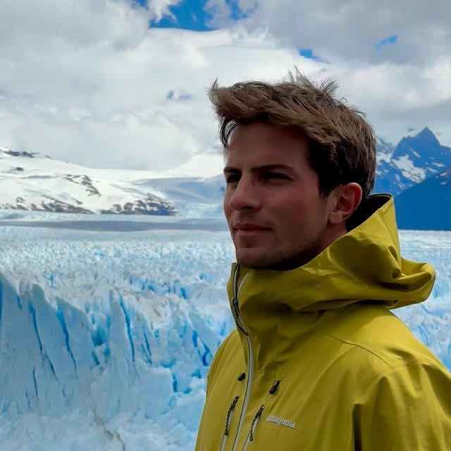
An aerospace engineer from Barcelona interested in robotic space exploration, autonomous and distributed space systems, optimization, and machine learning
I am a PhD candidate in Aeronautics and Astronautics at Stanford University, working on lunar navigation and autonomy in the Navigation and Autonomous Vehicles (NAV) Lab, advised by Prof. Grace Gao. My work covers lunar Positioning, Navigation, and Timing (PNT), rover perception, mapping and autonomy, simulation, and humanoid locomotion. The navigation, mapping and planning stack developed in our lab won first place in NASA's Lunar Autonomy Challenge.
In 2022, I completed my Bachelor's thesis on dynamic resource management in satellite communications as a visiting student in the System Architecture Group, Department of Aeronautics and Astronautics, Massachusetts Institute of Technology (MIT). In parallel, our MIT team developed a mission concept for producing propellants on Mars from in-situ resources, which won first place at NASA's RASC-AL competition.
I obtained a BSc in Aerospace Engineering and a BSc in Telecommunications Engineering at Universitat Politècnica de Catalunya (UPC) under the program offered by the Interdisciplinary Higher Education Center (CFIS). My studies were funded by a “la Caixa” Foundation Fellowship and a Cellex Foundation–CFIS UPC Fellowship. During high school, I started the Gadget Robotics team.
Soccer, skiing, scuba diving, and traveling are my favorite activities to take a break from work.
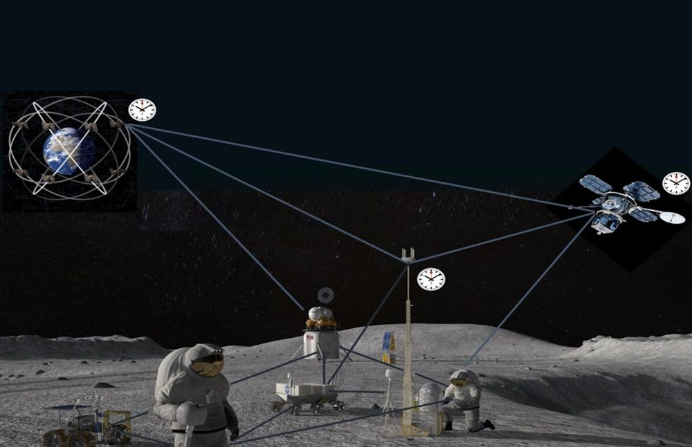
Navigation and Autonomous Vehicles – Stanford
With dozens of lunar missions planned in the coming decade, there is growing interest in deploying satellite constellations that provide communications and Positioning, Navigation, and Timing (PNT) services around the Moon. We study how to design and operate them: receiving Earth-GPS signals in lunar orbit, sensor fusion for orbit determination and time synchronization, scheduling of PNT services, delay-tolerant networking, and a lunar surface station that supports orbit determination. LuPNT, our open-source simulator for lunar communications and PNT, supports these studies. Our work on orbital sensor fusion for autonomous orbit determination and time synchronization won Best Paper in Space Communications and Navigation at the IEEE Aerospace Conference 2025.
Navigation and Autonomous Vehicles – Stanford
Rovers and humanoids will work alongside astronauts on the Moon, and autonomy, hazard avoidance and navigation are critical capabilities for them, especially while lunar navigation constellations are not yet deployed. We develop the layers of an autonomy stack: feature matching for visual SLAM, real-time semantic 3D Gaussian splatting maps with depth estimation, SLAM anchored to orbital elevation maps, and hazard detection and path planning. We test them in photorealistic lunar simulation, whose renders we compare against Apollo, Chang'e-3 and Artemis images, and on lunar testbed, Earth analog and real lunar data. We also study humanoid locomotion under lunar gravity, terrain and soil. The navigation, mapping and planning stack developed in our lab won first place in NASA's Lunar Autonomy Challenge.
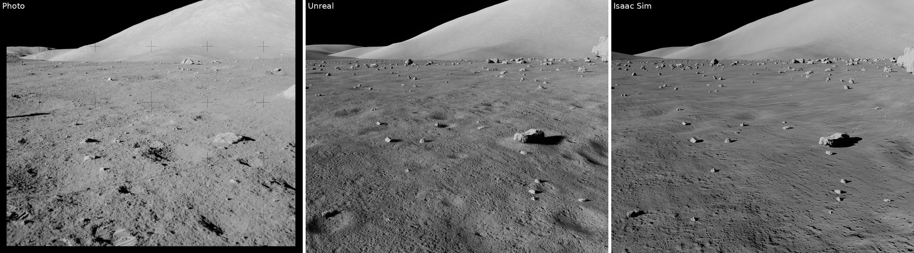
[NASA news] [Lunar Autonomy Challenge paper] [Humanoid preprint] [Publications]
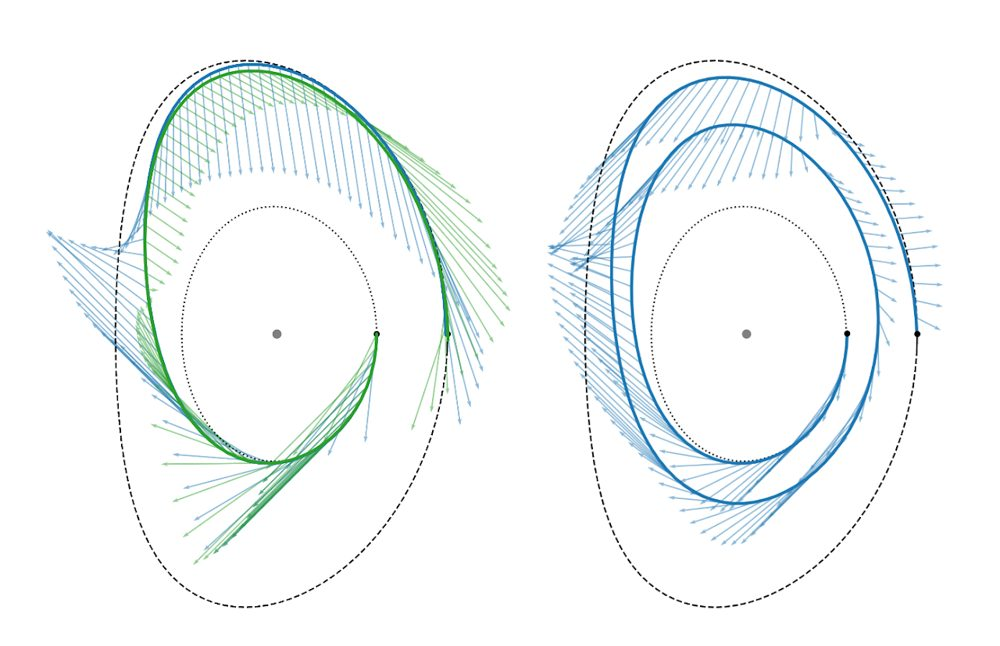
Stanford Computer Science
Interest in operating spacecraft between the Earth and the Moon, in cis-lunar space, is growing. Computing low-thrust trajectories there in real time is hard, because traditional optimization methods are computationally expensive. In this class project, we trained deep reinforcement learning policies that output low-thrust trajectories and their control inputs in real time.
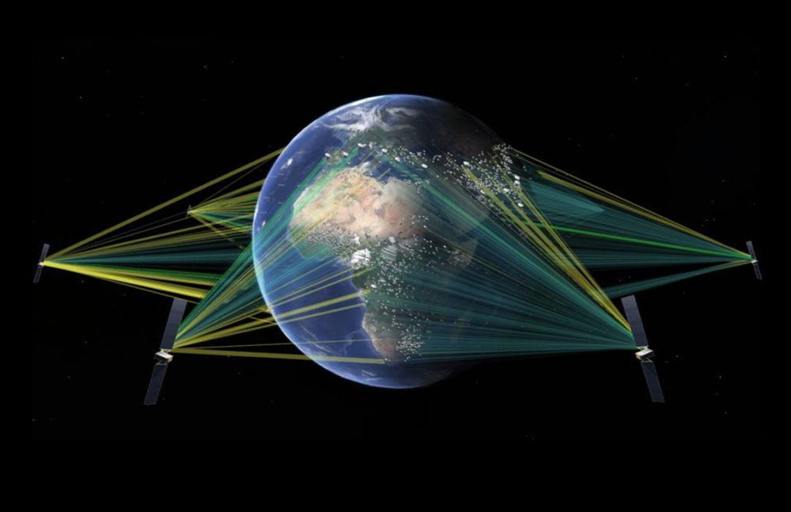
System Architecture Group – MIT
Modern high-throughput satellites with digital payloads and phased arrays have thousands of configurable variables, too many to allocate by hand. We developed optimization methods, including integer linear programming, that assign frequencies to satellite beams and re-plan them as user demand changes.
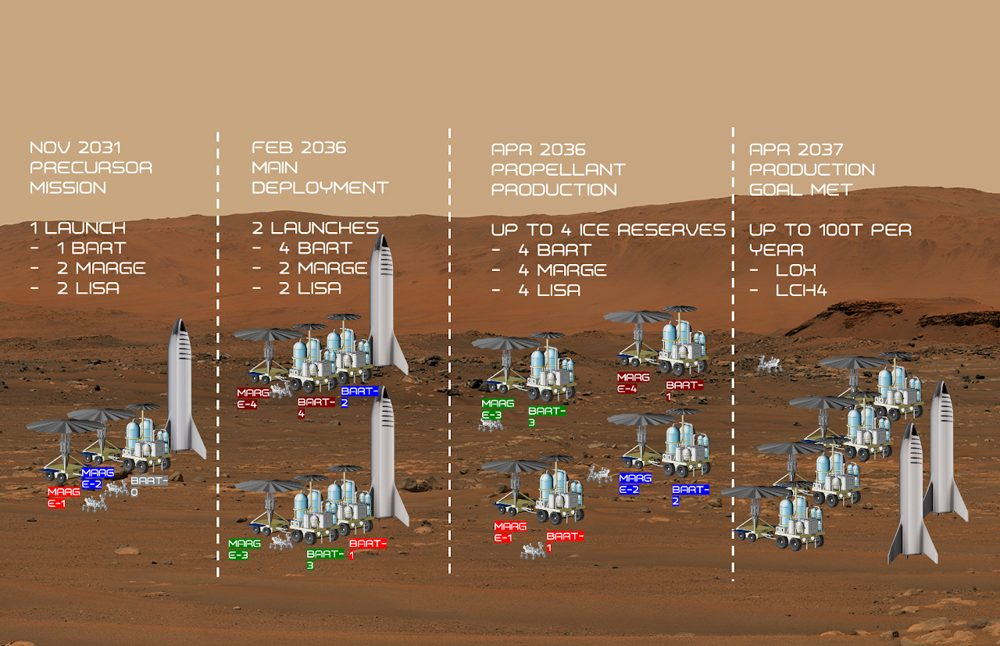
Engineering Systems Laboratory – MIT
NASA plans crewed missions to the Moon and Mars, and producing propellants and consumables from local resources is a key enabler for them. Our concept for NASA's RASC-AL competition uses trucks working in tandem to extract subsurface water ice and produce methalox at scale, with a focus on reliability and scalability. It won first place overall.
[Publications] [MIT News] [MIT AA News] [NASA story]
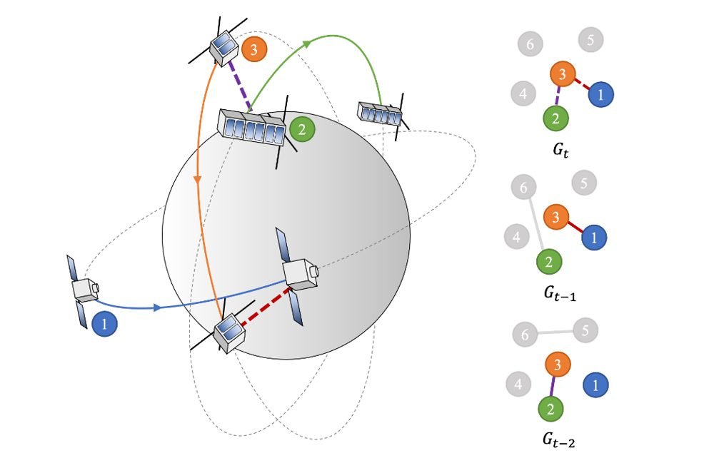
Nanosatellite and Payload Laboratory – UPC
Earth observation missions increasingly rely on distributed satellite systems, which need dedicated simulation tools for their design and operation. We developed a distributed satellite systems simulator to validate new mission architectures and to study satellite networking and autonomous operations, including learning-based scheduling.
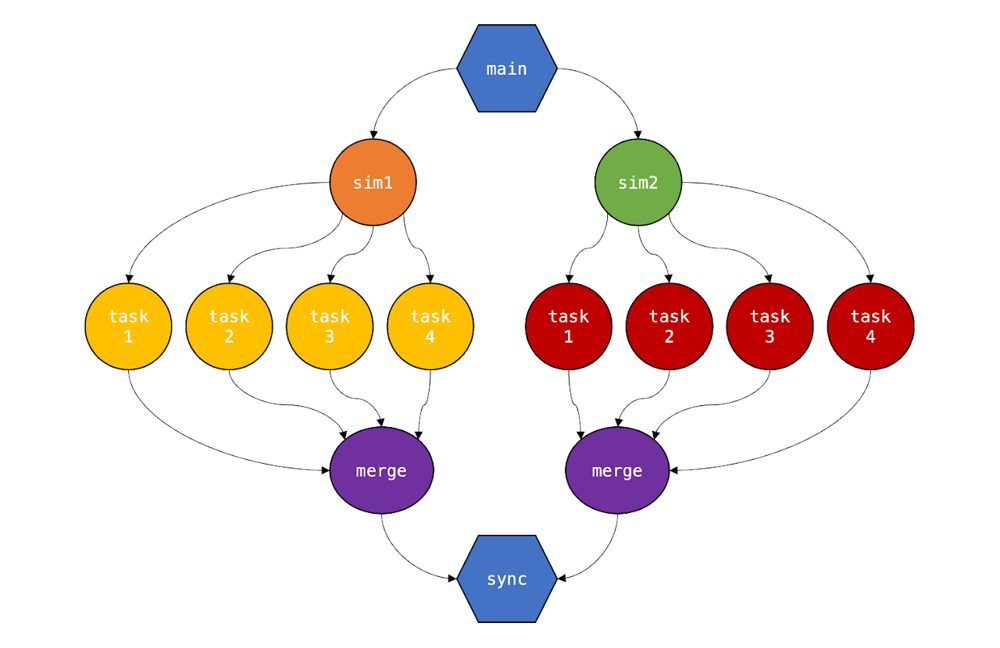
Workflows and Distributed Computing Group – BSC
Machine learning libraries are difficult to run on high-performance computing clusters. I developed machine learning algorithms for dislib, the Distributed Computing Library, a Python library built on PyCOMPSs, a programming model and runtime for clusters and clouds.
Gadget Robotics Team
I started the Gadget Robotics team in high school. We designed and built autonomous robots for line-following races, mini-sumo and humanoid fights, and competed in the Spanish National Robotics League.
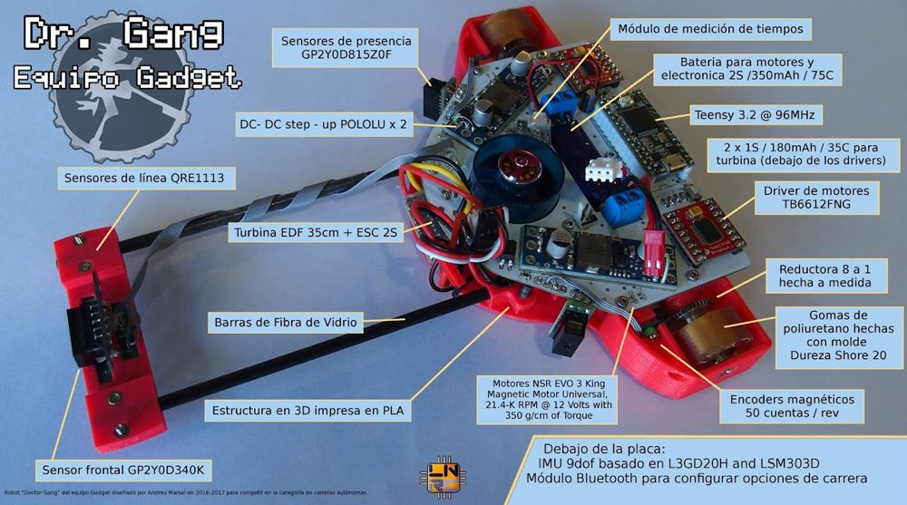
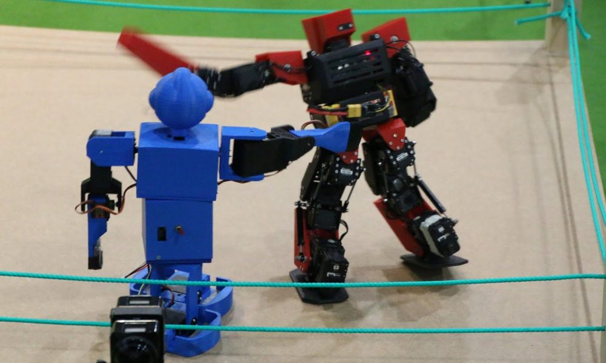
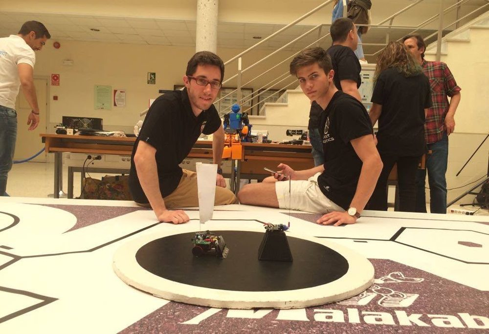
Skydio
Autonomy Intern, Computer Vision Team
Perception for autonomous obstacle avoidance on the X10 drone: semantic segmentation and monocular and stereo depth estimation for thin objects.
Stanford University
Research Assistant, Navigation and Autonomous Vehicles Lab
Autonomy stack for lunar rovers combining visual SLAM, 3D Gaussian splatting mapping and semantic perception, and LuPNT, an open-source C++ simulator for lunar orbital and surface navigation.
Stanford University
Teaching Assistant and Lecturer, AA 272: Global Positioning Systems
Taught the graduate course for three years.
NASA Jet Propulsion Laboratory
Research Intern, Spacecraft Autonomy and Simulation
Navigation algorithms for multi-satellite telescopes and the High-Energy X-ray Probe.
Massachusetts Institute of Technology
Research Intern, System Architecture Group
Uncertainty-aware spectrum optimization for high-throughput satellite communications.
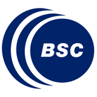
Barcelona Supercomputing Center
Research Intern, Workflows and Distributed Computing Group
Machine learning algorithms for high-performance and distributed computing.
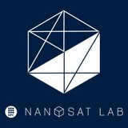
Nano-Satellite and Payload Laboratory, UPC
Research Intern, Distributed Satellite Systems
Satellite simulator and learning-based scheduling for large constellations.
Heat and Mass Transfer Technological Center, UPC
Research Intern, Turbulent Flow in Aerodynamics
Direct numerical simulations of turbulent flow.
* equal contribution
Stanford University
MSc and PhD in Aeronautics and Astronautics
Navigation and Autonomous Vehicles (NAV) Lab. Advisor: Prof. Grace Gao. Coursework: Deep Learning for Computer Vision, Validation of Safety Critical Systems, Systems for ML, State Estimation and Filtering for Robotic Perception, Decision Making Under Uncertainty, ML with Graphs, Graph and Combinatorial Optimization, Convex Optimization.
Massachusetts Institute of Technology
BSc Thesis in Aeronautics and Astronautics
Thesis: Dynamic Frequency Assignment for Mobile Users in Multibeam Satellite Constellations. Advisor: Prof. Edward F. Crawley.
Universitat Politècnica de Catalunya – CFIS
BSc in Aerospace Engineering (rank 1/60) and BSc in Telecommunications Engineering (rank 1/163)
Coursework: Systems Engineering, Aerospace Propulsion, Control Theory, Flight Mechanics, Communication Systems, Information Theory, Signal Processing, Network Protocols.
Presenter at the [Bay Area Robotics Symposium]
Spotlight talk and poster on lunar surface navigation and autonomy
Presenter at the [Stanford Center for AeroSpace Autonomy Research (CAESAR) Annual Meeting]
Presenter at the [Stanford Center for AI Safety Annual Meeting]
Best Paper Award at the IEEE Aerospace Conference [NAV Lab News]
Best Paper in Space Communications and Navigation for “Sensor Fusion for Autonomous Orbit Determination and Time Synchronization in Lunar Orbit”
Featured in [NASA News]
First place overall at the NASA Lunar Autonomy Challenge
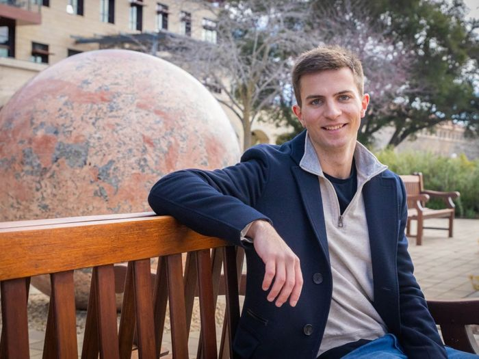
Stanford University [Spotlight]
Profile covering robotics projects, lunar PNT research in the NAV Lab and Mars propellant production
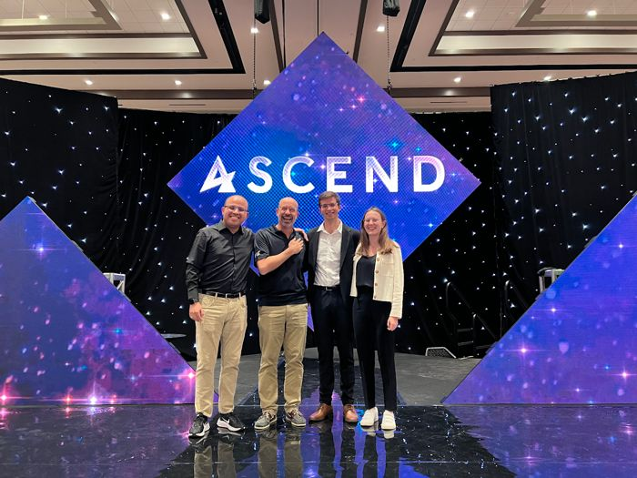
Presenter at AIAA ASCEND
Paper on the Mars propellant production concept
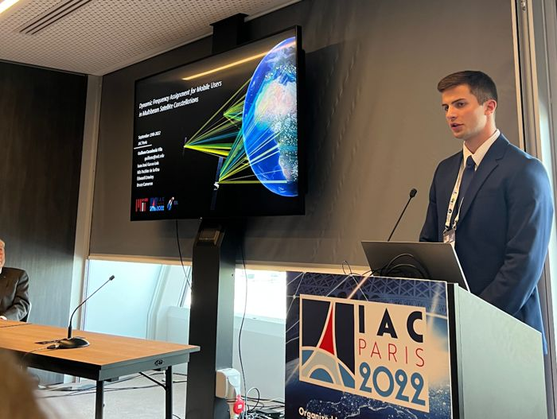
Presenter at the International Astronautical Congress
Paper on frequency assignment for satellite constellations
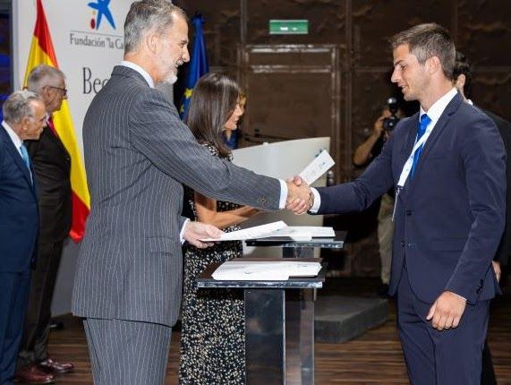
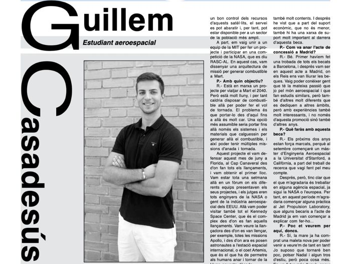
Interview in [la Veu de la Segarra]
Personal projects, “la Caixa” Fellowship award, and grad school
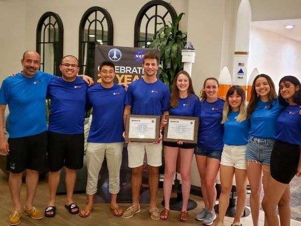
Featured in [NASA News], [MIT News] and [MIT AeroAstro News]
First place at the NASA RASC-AL competition
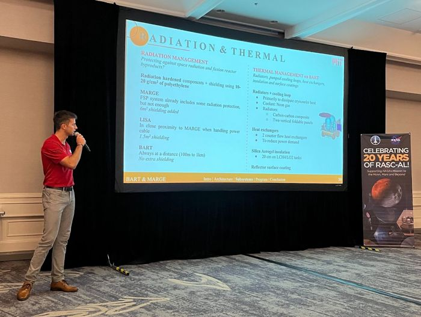
Presenter at the NASA RASC-AL Final Forum
Mars propellant production architecture
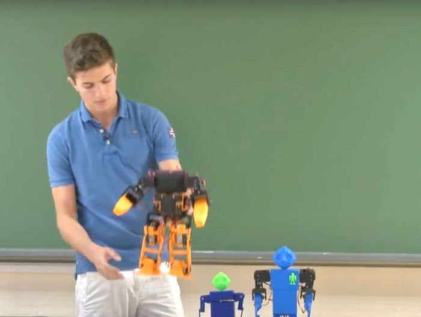
Presenter at [Malakabot Robotics]
Design and construction of a humanoid robot
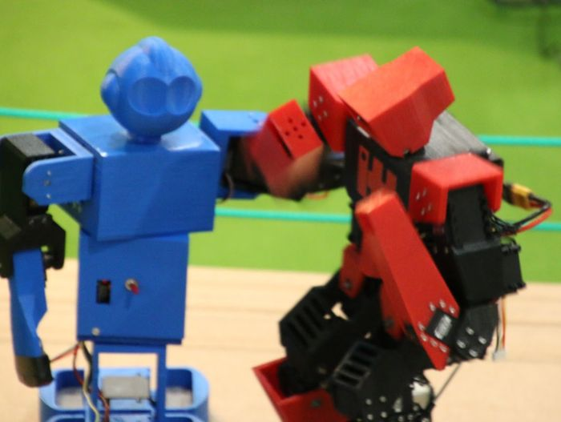
Creator of [Gadget Robotics Team]
Team that competed in the Spanish National Robotics League
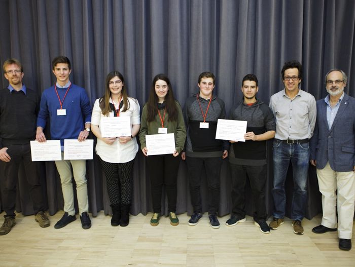
Featured in [UPF News]
First place at the XI UPF Research and Engineering Awards
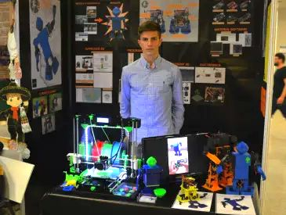
Featured in [Ara] & [laPedrera Foundation]
First place at the Exporecerca Jove research fair
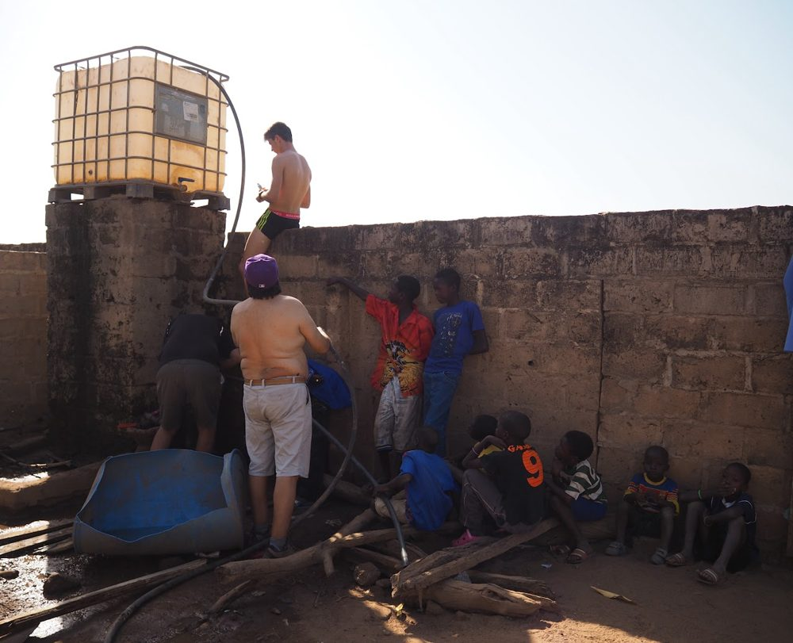
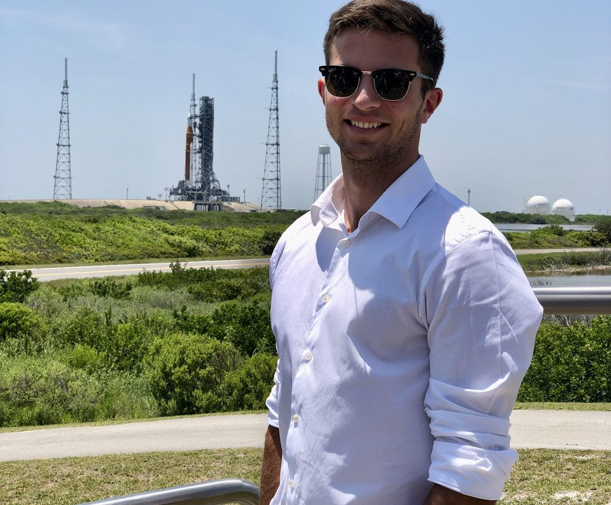
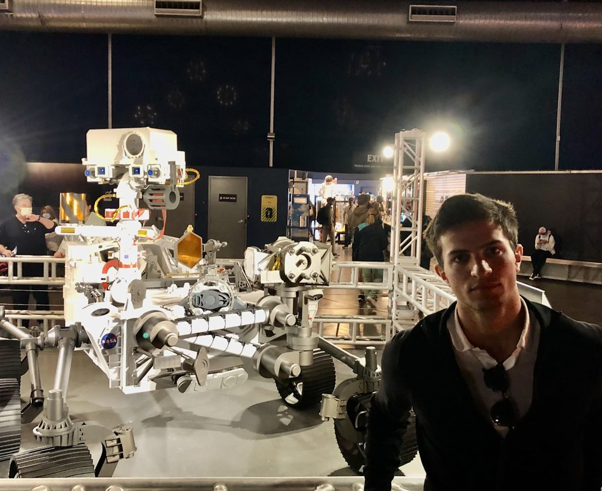
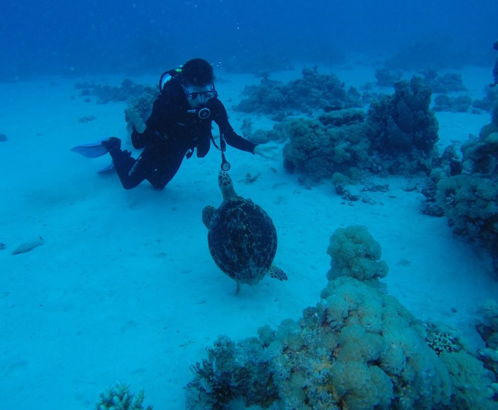
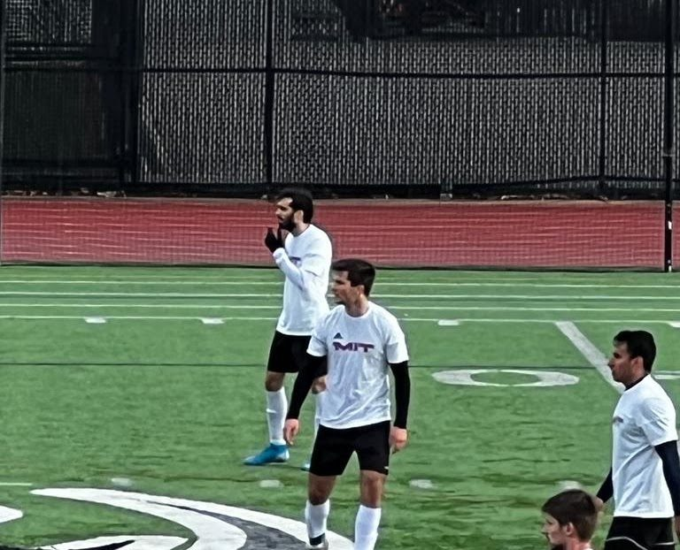
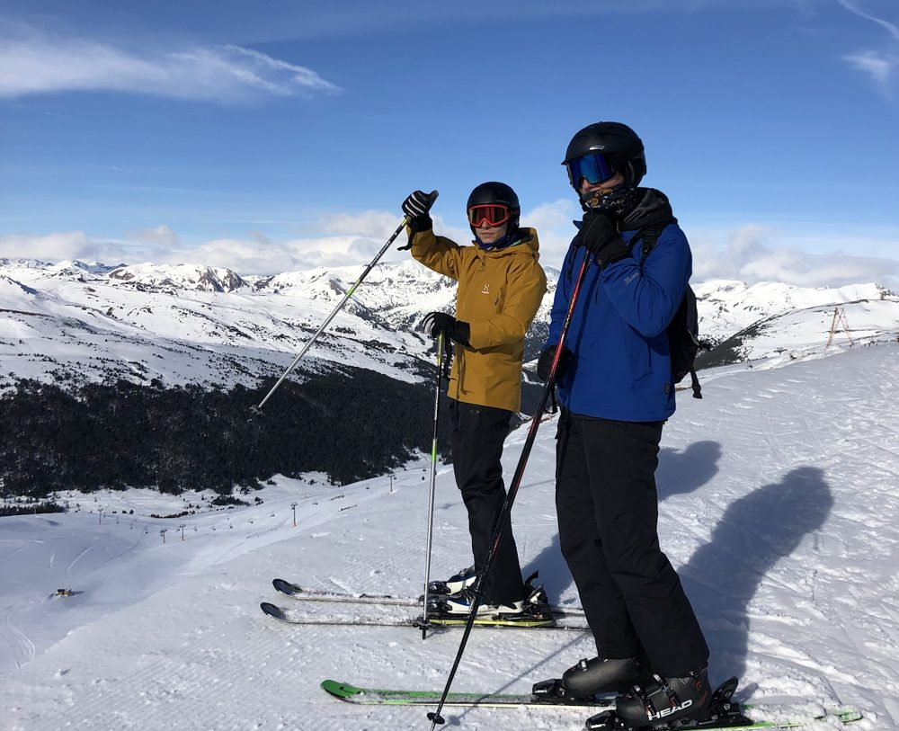